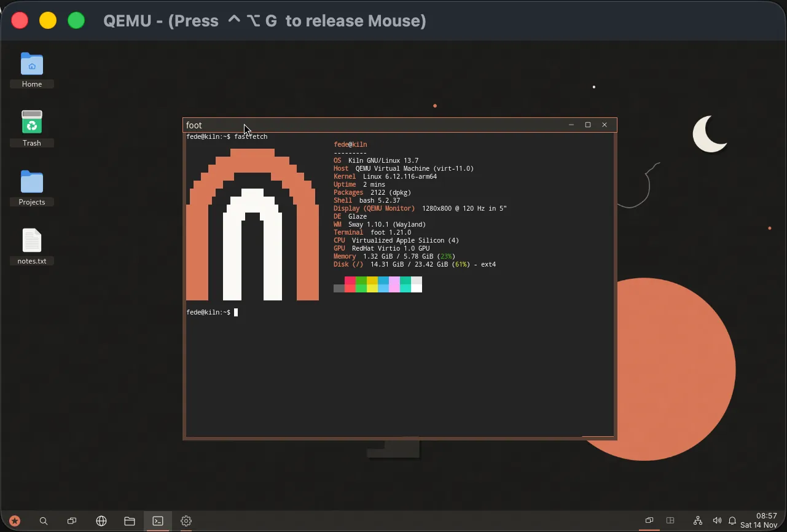
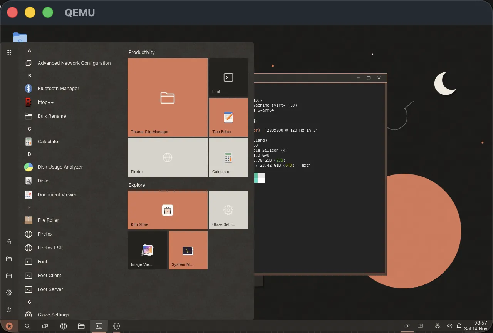

Debian underneath
Kiln builds on Debian 13. The repository includes scripts and a live-build recipe for assembling an x86_64 ISO.
A Debian 13-based GNU/Linux distro with its own desktop environment, Glaze. Built in Rust.

Glaze is Kiln's own desktop environment. A taskbar, an application launcher, settings, and familiar tools all sit together in one interface. This is what the current QEMU build looks like.

Kiln builds on Debian 13. The repository includes scripts and a live-build recipe for assembling an x86_64 ISO.
A Rust-based desktop environment with a compositor, panel, settings, and session components.
Themed desktop apps include Files, Terminal, Text, Calculator, Monitor, Viewer, and Kiln Store.
Kiln is a hobby project in active development. The aarch64 build has been tested in QEMU; the x86_64 build hasn't been verified on real hardware yet. If you want to try it, start with the build instructions.